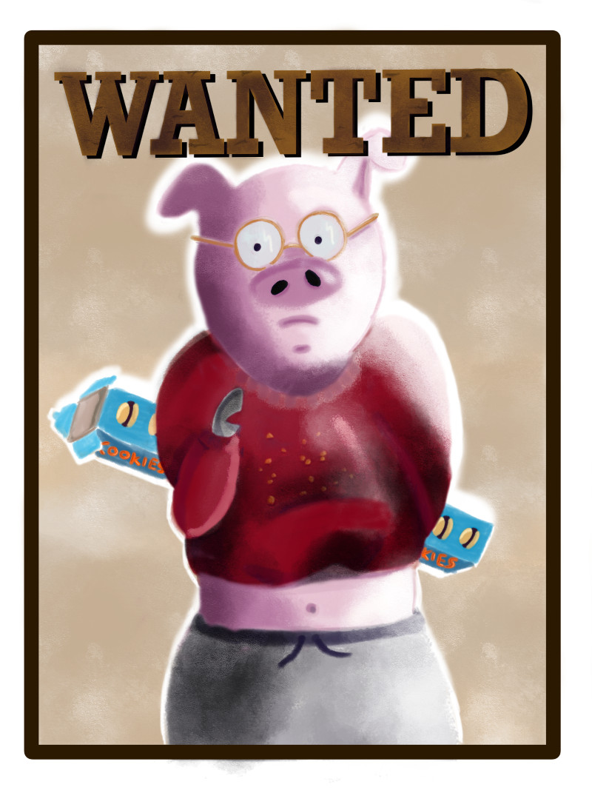

Défi de dessin hebdomadaire : Portrait lunettes grassouillet
Publié le 12/11/2018 dans Dessin.
SylverT nous rejoint dans ce défi hebdomadaire. Le thème se compose donc de 3 mots : « portrait, lunettes et grassouillet ».
J’ai utilisé une autre brosse dont le rendu faisait un peu trop « plastique ». Les reflets de lumières étaient trop brillants. J’ai donc reessayé avec un outil plus « poudré », type craie. Cette fois, le résultat était fade, terne. J’ai fini par superposer les deux en diminuant l’opacité de celui qui brillait. Je ne suis pas tellement satisfaite. Je dois encore tester d’autres outils.
